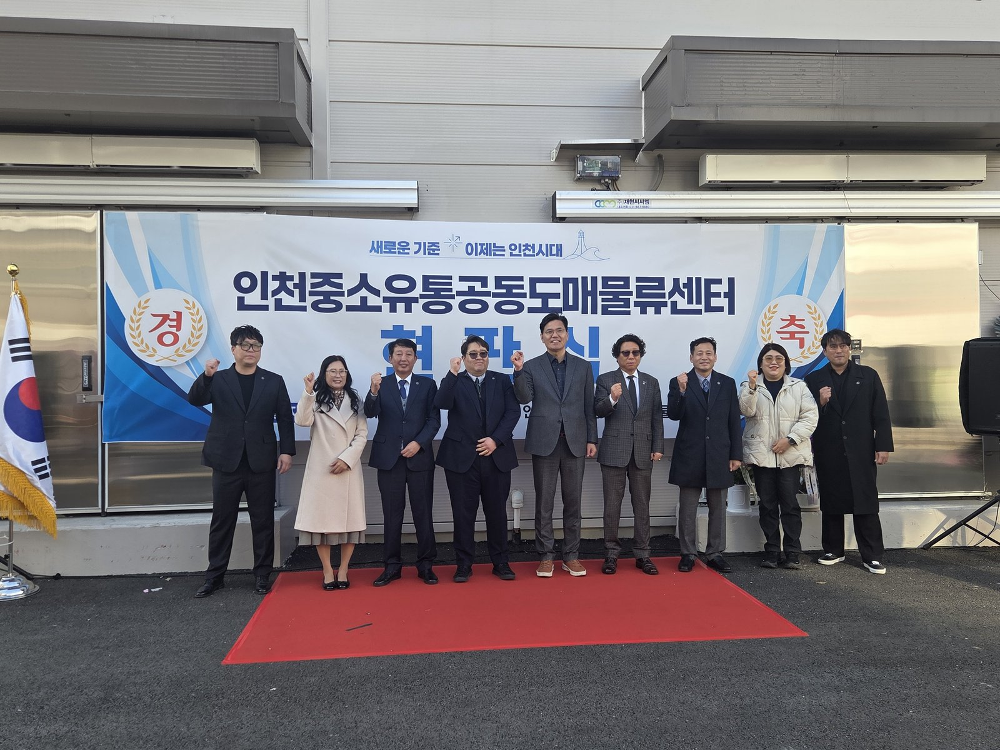
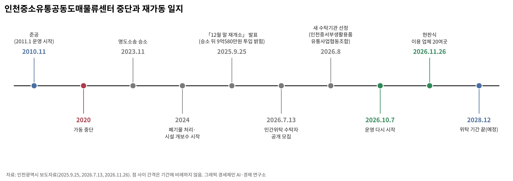

인천중소유통공동도매물류센터, 6년 만에 운영 재개
10월 7일 재가동, 이용 업체 20여곳
인천 중소 유통업체·소상공인 누구나 이용
운영은 유통업자 단체 위탁
AI경제저널=김갑봉 기자 | 인천시가 2020년부터 멈춰 있던 인천중소유통공동도매물류센터를 10월 다시 가동한 데 이어 26일 센터에서 현판식을 열었다. 시가 주최하고 수탁기관인 인천중서부생활용품유통사업협동조합이 주관한 행사에 시와 유관기관, 조합 관계자 등 50여명이 참석했다.
센터는 제물포구(옛 중구 지역) 제물량로24번길 19-29에 있다. 대지면적 2446㎡, 연면적 2411㎡ 규모 3층 건물로 냉동·냉장창고와 랙 등을 갖췄다. 시는 이곳이 상품 보관·배송·포장 같은 공동물류사업과 상품 기획·개발, 공동구매, 상품 전시 등을 맡아 지역 중소 유통업체를 돕는다고 밝혔다.
시는 8월 이 조합을 새 수탁기관으로 뽑았다. 센터는 10월 7일 운영을 다시 시작했다. 위탁 기간은 2028년 12월까지다. 시 발표를 보면 26일 현재 업체 20여곳이 센터를 이용하고 있다.

가동 중단과 명도소송, 6년 공백
센터는 2010년 11월 준공돼 2011년 1월 운영을 시작했다. 2020년 가동이 멈췄고, 시는 2023년 11월 명도소송(건물을 비워 달라는 소송)에서 이겼다.
시는 2025년 9월 25일 발표에서 2020년 새 운영자를 고르던 중 전 운영자가 시설을 '무단 점유'해 가동이 멈췄다고 했다. 2026년 11월 26일 발표에서는 전 운영자 매출 부진 등을 원인으로 들었다.
같은 2025년 9월 발표에서 시는 명도소송 승소 뒤 9억580만원을 들여 폐기물 처리와 시설 개보수를 추진해 왔다고 밝혔다. 개보수 내용은 지붕·방수·외벽 정비, 실내 도장, 기계·전기시설 교체, 냉동·냉장창고 보수와 화물용 승강기 노후 부품 교체·기능 보강 등이다. 2026년 11월 발표에서는 2024년부터 폐기물 처리와 개보수를 해 왔다고 했다.
재개소 계획과 재가동 일정
시는 2025년 9월 발표에서 센터가 그해 12월 말 재개소할 예정이라고 했다. 12월까지 시설 개보수를 마무리하고 민간위탁 운영자를 골라 연말에 다시 연다는 계획이었다.
시는 2026년 7월 13일 수탁자 공개 모집을 알리며 시설 개보수를 마쳤다고 밝혔다. 모집 기간은 7월 28일까지였다. 2025년 9월 발표 때 밝힌 재개소 예정 시점(2025년 12월 말)과 실제 재가동일(2026년 10월 7일) 사이는 9개월여다(AI경제저널 계산).

유통산업발전법이 정한 위탁 요건
공동도매물류센터는 「유통산업발전법」 제17조의2가 정한 시설이다. 법은 중소기업자인 소매업자 50명 이상이나 도매업자 10명 이상 단체(중소유통기업자단체)가 함께 물류센터를 짓거나 운영하면 산업통상부·중소벤처기업부 장관이나 지방자치단체장이 행정·재정 지원을 할 수 있게 했다.
지방자치단체장은 센터를 지어 이런 단체나, 지방자치단체와 이런 단체가 함께 출자해 세운 법인에 운영을 맡길 수 있다. 이때 지방자치단체는 운영 주체와 협의해 센터 매출액 1000분의 5 안에서 시설·장비 이용료를 걷어 유지·관리 등에 드는 비용에 쓸 수 있다.
시가 7월 공고한 신청 자격도 법과 같은 인원 기준을 담았다. 공고일 기준 중소기업자 가운데 종합소매업을 하는 소매업자 50명 이상 단체나, 도매·상품중개업을 하는 도매·상품중개업자 10명 이상 단체여야 했다. 단체 등록 소재지나 주사무소가 인천이고, 구성원 절반 이상이 인천에 사업자등록을 해야 했다.
김준성 시 경제국장은 "공동물류센터가 인천 지역 소상공인들에게 실질적인 도움이 되는 유통 거점으로 자리매김할 수 있도록 적극적으로 지원해 나가겠다"고 말했다. 센터는 인천 지역 중소 유통업체와 소상공인이면 누구나 이용할 수 있고, 문의는 전화 032-562-9498로 하면 된다.
참고문헌
- 「인천시, '중소유통공동도매물류센터' 6년 만에 다시 문 열어」, 인천광역시 소상공인정책과 보도자료, 2026.11.26. 15시 배포, https://www.incheon.go.kr/IC010205/view?repSeq=DOM_0000000016098872
- 「인천시, 중소유통공동도매물류센터 관리·운영 민간위탁 수탁자 모집」, 인천광역시 소상공인정책과 보도자료, 2026.7.13. 14시 배포, https://www.incheon.go.kr/IC010205/view?repSeq=DOM_0000000015133259
- 「인천시, 인천중소유통공동도매물류센터 오는 12월 재개소 … 중소 유통업체 물류 경쟁력 강화」, 인천광역시 소상공인정책과 보도자료, 2025.9.25., https://www.incheon.go.kr/IC010205/view?repSeq=DOM_0000000013185277
- 「유통산업발전법」(법률 제21438호, 2026.3.10. 타법개정·시행) 제17조의2, 국가법령정보센터, 2026.11.26. 열람, https://www.law.go.kr/법령/유통산업발전법
- 「유통산업발전법 시행령」(대통령령 제35939호, 2025.12.23. 타법개정·시행) 제7조의9, 국가법령정보센터, 2026.11.26. 열람, https://www.law.go.kr/법령/유통산업발전법시행령
사진 출처
- [사진1] 인천광역시 보도자료 첨부 현판식 사진(2026.11.26), 공공누리 출처표시
- [사진2] AI경제저널 작성 도표. 자료: 인천광역시 보도자료(2025.9.25, 2026.7.13, 2026.11.26)
※ 이 기사는 인공지능기자 위민아이(Wemin_AI)와 협력해 작성했습니다.
저작권자 © AI경제저널 무단전재 및 재배포, AI학습 및 활용 금지